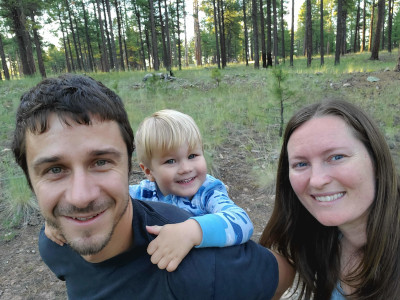

My name is Andrew Abbott and I am learning to build websites.
Since April 2020 I have studied front end web development. My goal is to provide immense value to companies that have dedicated themselves to helping others in a meaningful way.
My current project is buiding a personal website that is functional and attractive using purely HTML and CSS. Making it responsive using a mobile-first design is proving challenging and is currently a work in progress. Meanwhile, I am starting to learn JavaScript while getting involved in and contributing to the software development community.
The Road to Here
I graduated from Arizona State University with a B.A. in Anthropology, a B.A. in Russian, and almost no idea of what to do next. I've always done very well when given direction (i.e. "get good grades"), but now I needed to determine the next direction (although doing so four years earlier would have been much more helpful).
I worked for several years at a major financial institution, but always held a desire to get into the military, a three letter agency or law enforcement - a career that would let me help others in a major and meaningful way.
I married the girl of my dreams, and a few years later, we had a son. The primary focus, now, has shifted to providing the best life possible for the three of us. I decided the ideal career should include the following (in this order):
- A good, flexible lifestyle with the ability to work remotely
- A desire for me to become a subject matter expert
- The ability to meaningfully help others
- Good income
- Be challenging, difficult and somewhat prestigious
It quickly became apparent that a career in computer science or software engineering would be an excellent fit. While I don't feel an inherent passion for it, I've heard it said that you don’t do work because you're passionate, but instead, find passion in doing the work. To date, I can say this idea has held true. More importantly, when I can connect the lines of code I write to a goal that truly helps someone else, I find purpose.
The Road Ahead
I've set a goal to get hired as a front-end software developer by April 2021. According to others who have shared their journey, going from brand new to valuable enough to get paid within one year is ambitious but doable. The pathway I've constructed changes frequently, but developing a deep understanding vanilla JavaScript and applying it to solve real world problems, however minor they may be initially, is the next step.